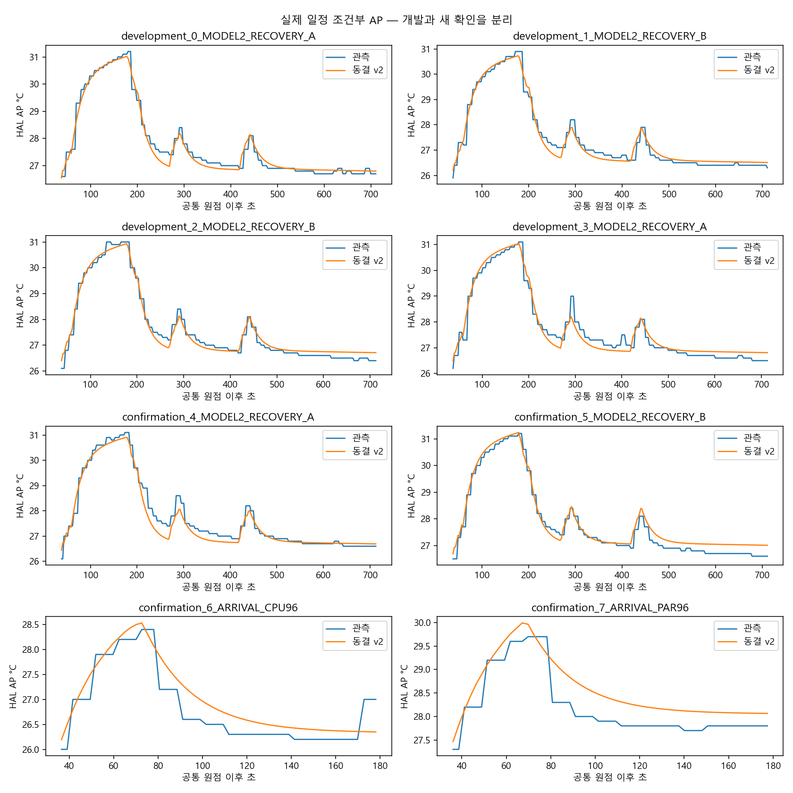
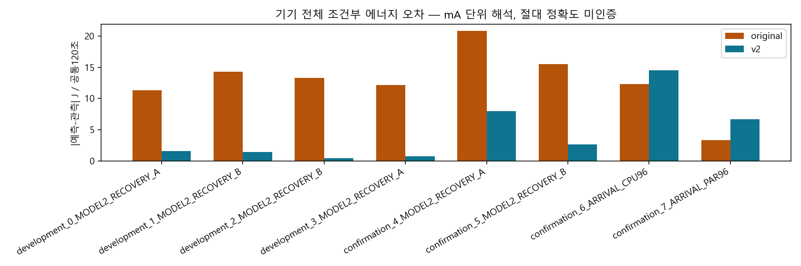
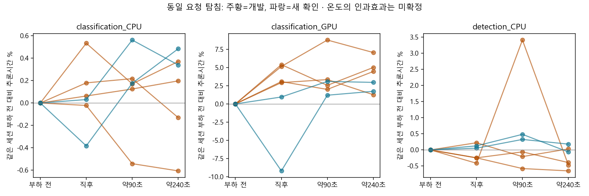

독립 실측/조건부 비용/예정 도착 예측을 구분합니다. 기본 모형 채택·정책 우월성·정확도 PASS는 미판정입니다. 원 종료 실패 계측1의 재사용은 앱 lifecycle PASS가 아니며 CSV에 별도 표시합니다.
전체 수치·근거 · 동결 계수 · 전체8세션 분모 · 조건부 J/AP 오차 · 예정 도착 예측 · 동일 세션 속도/회복
| 순서 | 역할 | 입력 | 상태 | 실제 작업 |
|---|---|---|---|---|
| 0 | development | MODEL2_RECOVERY_A | validated | 863 |
| 1 | development | MODEL2_RECOVERY_B | validated | 863 |
| 2 | development | MODEL2_RECOVERY_B | validated | 865 |
| 3 | development | MODEL2_RECOVERY_A | validated | 863 |
| 4 | confirmation | MODEL2_RECOVERY_A | validated | 863 |
| 5 | confirmation | MODEL2_RECOVERY_B | validated | 867 |
| 6 | confirmation | ARRIVAL_CPU96 | validated | 96 |
| 7 | confirmation | ARRIVAL_PAR96 | validated | 96 |
정책마다 분류/탐지 각48요청입니다. 성공·기한 내 성공의 분모는 전체 도착이며 P95는 완료 요청만 사용합니다. CPU/PAR 각1회이고 PAR은 사용자 이동 후 재개했으므로 초기 조건과 시간 차이가 포함됩니다. 표의 에너지 오차는 예측-관측 J, 온도 오차는 MAE °C입니다.
| session | priority | observed_completed | observed_timely | observed_P95_ms | original_P95_ms | v2_P95_ms | original_J120_signed | v2_J120_signed | original_AP_MAE_c | v2_AP_MAE_c |
|---|---|---|---|---|---|---|---|---|---|---|
| confirmation_6_ARRIVAL_CPU96 | urgent | 48 | 48 | 764.4782 | 750.2543 | 754.7792 | 12.5459 | 14.6662 | 0.2307 | 0.2891 |
| confirmation_6_ARRIVAL_CPU96 | normal | 48 | 48 | 5041.5477 | 5090.4355 | 5119.652 | 12.5459 | 14.6662 | 0.2307 | 0.2891 |
| confirmation_7_ARRIVAL_PAR96 | urgent | 48 | 48 | 296.8422 | 286.6085 | 268.3501 | 3.8447 | 6.8317 | 0.3859 | 0.3907 |
| confirmation_7_ARRIVAL_PAR96 | normal | 48 | 48 | 645.8701 | 618.7909 | 618.7054 | 3.8447 | 6.8317 | 0.3859 | 0.3907 |


